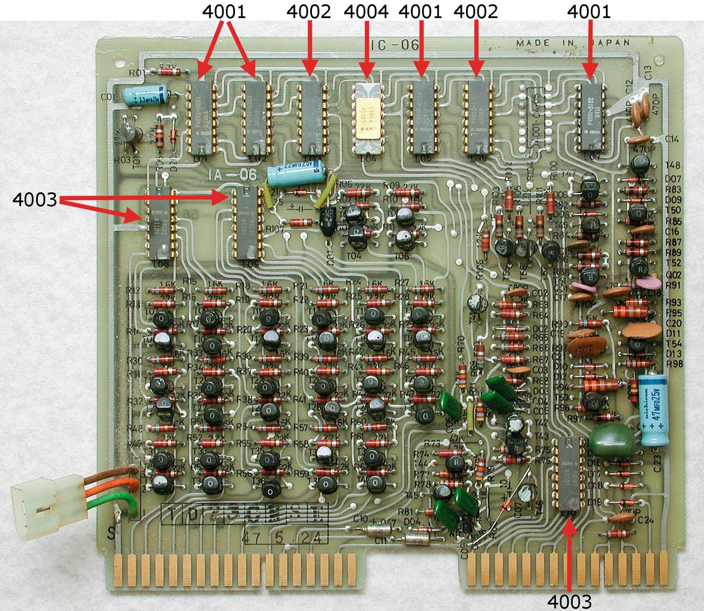
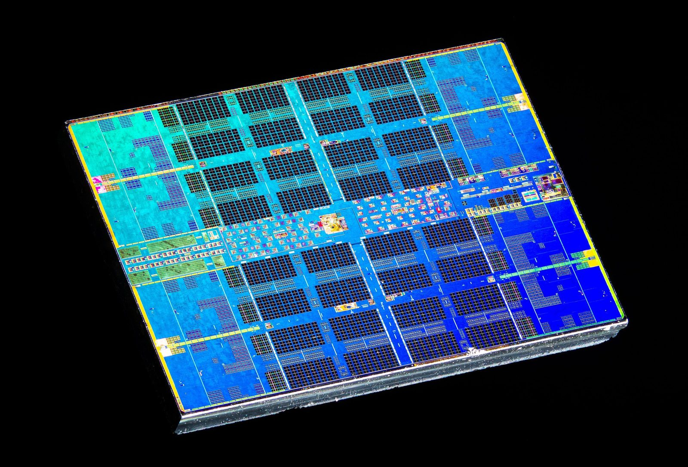

Unit 1 · Lesson 4
The brain: the CPU
In 1971 a whole processor fitted on a chip smaller than a fingernail. The chip in your phone does the same job, billions of times a second.
The story
In the 1960s the processor of a computer, the part that follows the instructions, was spread over many chips and boards full of wires. It was big, expensive, and every wire was one more thing that could break.
In November 1971 the company Intel sold the 4004: the whole CPU on one small chip of silicon, with about 2,300 transistors. It was first built for a Japanese calculator.


Its design was led by Federico Faggin, who was born in Vicenza.
One chip mattered. It was small and cheap, and it was more reliable, because there were fewer wires to break. Soon processors went into calculators, cash registers, cars and, a few years later, personal computers.
Inside your computer today: the CPU in your phone or laptop. It has billions of transistors instead of 2,300, and several cores, but it does the same job as the 4004: it fetches an instruction, works out what it means, does it, and fetches the next one.
The science
The CPU: the cook
The CPU (central processing unit) is the part of a computer that follows instructions. An instruction is one small order, one line of a program. In our kitchen, the CPU is the cook: it reads one line of the recipe, does it, and reads the next. The cook remembers almost nothing between lines.
- The cook = CPU core
- The metronome = clock (GHz)
- The countertop = cache
- The workbench = RAM
- The pantry = storage (SSD / HDD)
Fetch, decode, execute, next
The program and the data wait in memory (lesson 2), like a row of numbered boxes. The CPU repeats one loop. Fetch: get the next instruction from memory. Decode: work out what it means. Execute: do it. Then it moves on to the next line. It never reads the whole program at once: one line at a time.
- The cook = CPU core
- The metronome = clock (GHz)
- The countertop = cache
- The workbench = RAM
- The pantry = storage (SSD / HDD)
The clock: the metronome
The clock gives the beat, like a metronome. GHz (gigahertz) means billions of beats a second: 3.2 GHz is 3.2 billion beats a second. More GHz is faster only when two chips have the same design. A newer chip can do more work in each beat, so a 2.5 GHz chip from this year can beat a 3 GHz chip from 2015.
- The cook = CPU core
- The metronome = clock (GHz)
- The countertop = cache
- The workbench = RAM
- The pantry = storage (SSD / HDD)
Cores: more cooks
A core is one cook. 'Octa-core' means eight cooks. But the eight cooks share one kitchen, and many steps must wait for the step before: you cannot ice a cake before it is baked. So eight cores are faster, but not eight times faster.
- The cook = CPU core
- The metronome = clock (GHz)
- The countertop = cache
- The workbench = RAM
- The pantry = storage (SSD / HDD)


Check now
Quick questions. You see the answer at once.
Put the CPU's three steps in order.
- decode
- execute
- fetch
A clock runs at 3 GHz: 3 billion beats a second. How many beats does it make in 2 seconds? Answer in billions.
What was new about the Intel 4004 (1971)?
- it was the first computer
- the whole CPU was on one chip
- it was the first transistor
Try it
Press Step phase and watch the CPU fetch, decode and execute each line of the program. Then change the INPUT numbers, and try the countdown and the program with a bug.
Paper version
RAM has 8 boxes. Boxes 0–5 hold the program, boxes 6–7 hold data. The CPU has one 'hand' (the accumulator). Program 'Add two numbers', INPUT numbers 7 and 5: line 0 INPUT → box 6: box 6 = 7 line 1 INPUT → box 7: box 7 = 5 line 2 LOAD box 6: hand = 7 line 3 ADD box 7: hand = 7 + 5 = 12 line 4 STORE → box 6: box 6 = 12 line 5 OUTPUT box 6: the output is 12 Box 6 holds data, not an instruction, so the CPU stops. Each line goes through three phases: FETCH (get it), DECODE (understand it), EXECUTE (do it).
Your turn
Exercises
From ★☆☆ (easy) to ★★★ (hard). Use a hint if you are stuck.
-
Exercise 1 ★☆☆
What does the CPU do in the decode step?
- it gets the instruction from memory
- it works out what the instruction means
- it switches off
-
Exercise 2 ★☆☆
Match each part to its place in the kitchen.
- CPU core — ?
- clock — ?
- RAM — ?
- storage — ?
-
Exercise 3 ★★☆
A phone chip runs at 2.5 GHz. How many beats does its clock make in 4 seconds? Answer in billions.
-
Exercise 4 ★★☆
In the stepper, the countdown program starts with box 6 = 3 and box 7 = 1. Each time round, it outputs box 6 and takes 1 away. How many numbers does it output before it stops?
-
Exercise 5 ★★☆
A program says: INPUT → box 6 · INPUT → box 7 · LOAD box 6 · ADD box 8 · STORE → box 6 · OUTPUT box 6. RAM has boxes 0 to 7. Where is the bug?
- INPUT → box 7
- ADD box 8
- OUTPUT box 6
-
Exercise 6 ★★☆
A phone with 8 cores is 8 times faster than the same phone with 1 core.
True or false?
-
Exercise 7 ★☆☆
Put these milestones in time order, oldest first.
- Babbage's Analytical Engine (1837)
- ENIAC, with about 17,500 tubes (1946)
- the Intel 4004 (1971)
- the transistor (1947)
-
Exercise 8 ★★★
Why did it matter that, from 1971, the whole CPU fitted on one chip? Give two reasons.
In one sentence
The CPU fetches one instruction, does it, and fetches the next, billions of times a second.
Words of the chapter
- CPU
- central processing unit: the part that follows the instructions, the cook CPU (processore)
- instruction
- one small order, one line of a program istruzione
- fetch–decode–execute
- get the instruction, understand it, do it: the loop of every core prelievo–decodifica–esecuzione
- clock (GHz)
- the metronome: billions of beats a second clock (GHz)
- core
- one cook; more cooks are not N times faster core (nucleo)
- chip
- many transistors on one small piece of silicon chip (circuito integrato)
- bug · debug
- a mistake in a program · finding and fixing it bug · debug